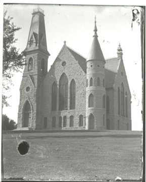

This image has been rotated so that the floor is level and the organ pipes go straight up and down, and it has been cropped to get rid of the excess exposed paper around the outside of the image. The image also had a lot of white spots removed, and the area where the organ sits darkened to be able to see the woodwork more clearly. On the left side of the image there is a window and a large light spot; it was removed and what was under it was rebuilt. A brownish color has been added to give it a warmer feel and to calm some of the harsh contrast. This is an example of a total restoration; removal of spots, adjusting brightness/contrast, crop/rotate, and the addition of color. Below are some details from the image.
The next example is a picture of the outside of King Chapel. This image has also had a total restoration.
